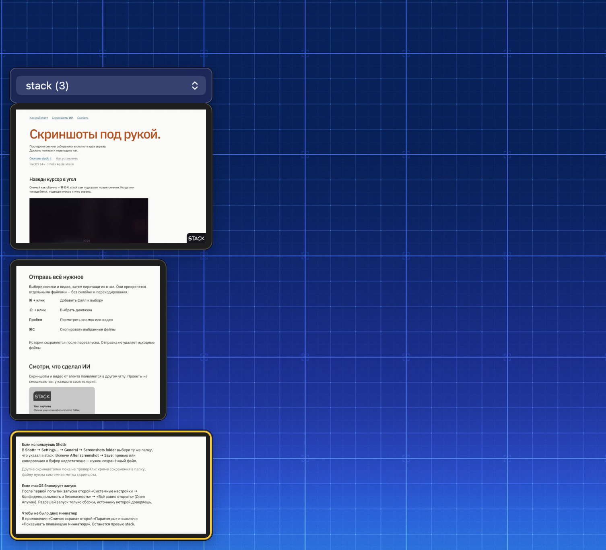
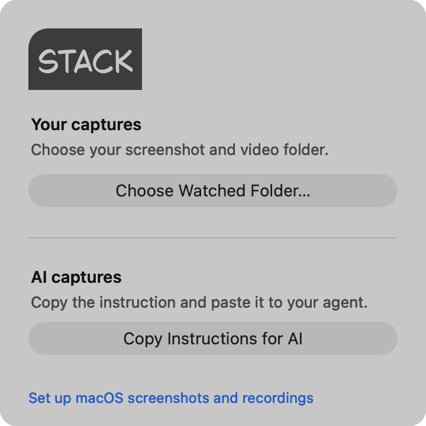

Скриншоты под рукой.
Stack собирает скриншоты и видео в углу экрана. Выбирай нужные и перетаскивай в чат.
macOS 14+
Скачать для MacВыбери нужные скриншоты в стопке и перетащи их в поле сообщения.
Агентские скриншоты — в другом углу
Stack сам создаёт папку ~/Pictures/stack/AI. Агент сохраняет туда снимки и видео, отдельно для каждого проекта — ему нужен доступ к файлам на твоём Mac.

Скопируй инструкцию через Copy Instructions for AI в меню Stack и отправь своему ИИ-агенту. Попроси показать результат скриншотом или видео.
Чтобы выбрать другую папку, открой Settings… → AI capture folder → Change…. После смены папки скопируй инструкцию заново и передай агенту.
Установи Stack
macOS 14+
- Распакуй ZIP, перенеси stack.app в «Программы» и запусти.
- Выбери папку сохранения в своей скриншоталке. Для системных снимков открой «Снимок экрана → Параметры»; для Shottr — настройки ниже.
-
В окне первого запуска Stack нажми Choose Watched Folder… и выбери ту же папку.

Позже папку можно изменить в меню Stack → Settings… → Watched folder → Change….
- Сделай новый снимок — он появится в стопке.
Со своей скриншоталкой
Скриншоталка сохраняет снимки, а Stack подхватывает их из той же папки. Укажи одну папку в обоих приложениях. Из сторонних скриншоталок пока проверили Shottr.
В Shottr выбери эту папку в Settings… → General → Screenshots folder и включи After screenshot → Save.
Нужен сохранённый файл с системной меткой скриншота — одного копирования в буфер недостаточно.
Если macOS блокирует запуск
После первой попытки запуска открой «Системные настройки → Конфиденциальность и безопасность» → «Всё равно открыть» (Open Anyway). Разрешай запуск только сборки, источнику которой доверяешь.
Чтобы не было двух миниатюр
В приложении «Снимок экрана» открой «Параметры» и выключи «Показывать плавающую миниатюру». Останется превью Stack.